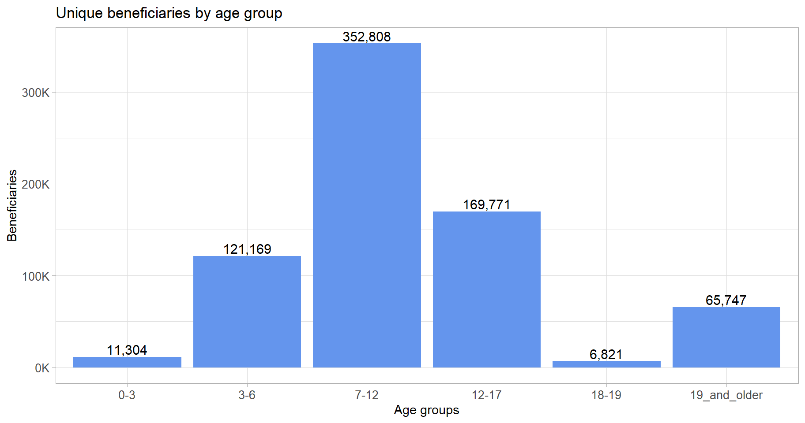
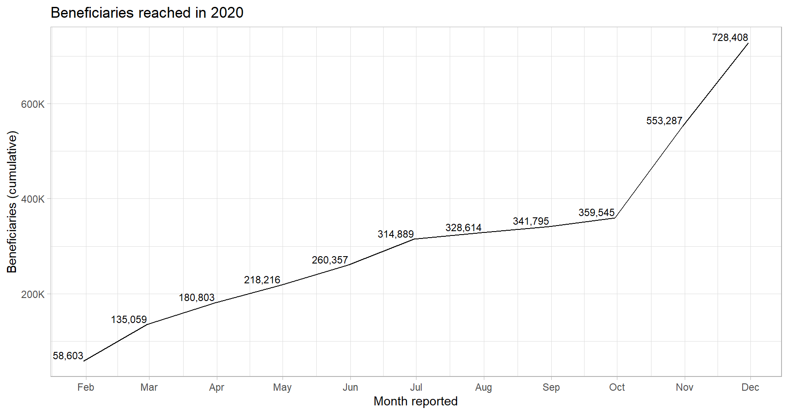
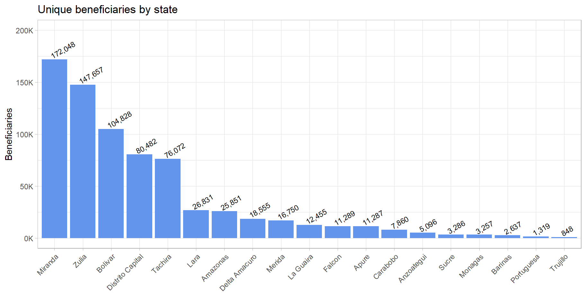
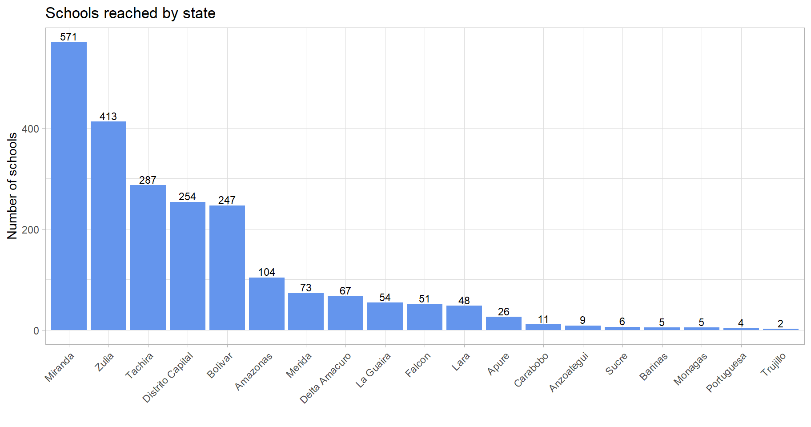
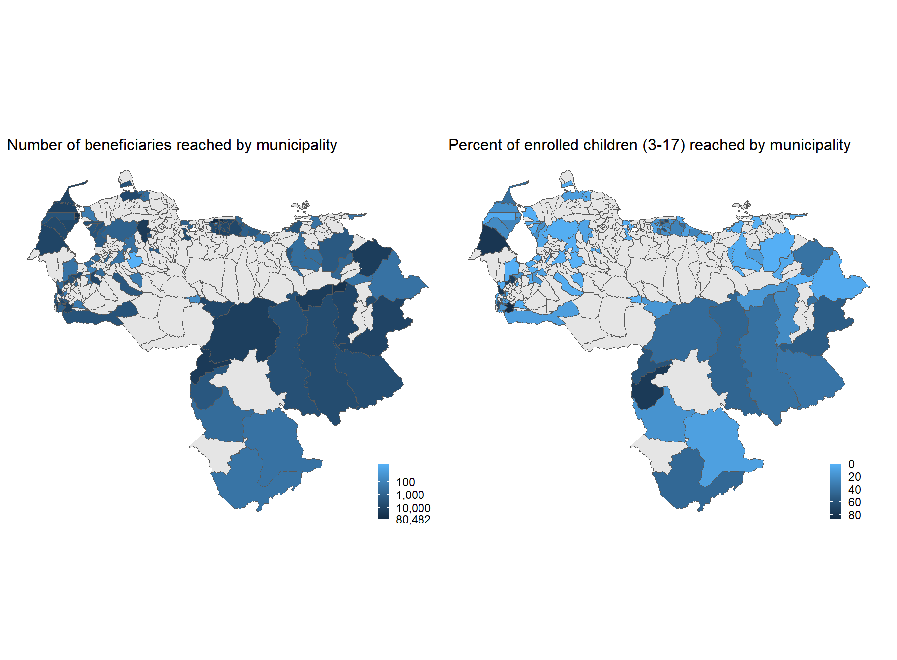

# read in census reference dataset
cen_ref <- read_excel("census_data_20191122.xlsx", sheet = "data") %>%
clean_names() %>%
select(estado, pcode1, municipio, pcode2, parroquia, pcode3, field_office,
poblacion_total_2011, x_2019_poblacion_parroquial_total,
ham_2019_ambitos_ge, ham_2019_xx_pobreza_env_por_parroquia,
ham_2019_xx_poblacion_pobre_por_parroquia,
poblacion_infantil_menor_de_12_anos, poblacion_adolescentes_de_12_a_17_anos,
poblacion_de_18_anos_y_mas,
poblacion_urbana_percent, area_km2, densidad_poblacional_ppl_km2,
matricula_2017_educacion_inicial, matricula_2017_educacion_primaria,
matricula_2017_educacion_media)
# Reading in the activity beneficiaries dataframe
# This or most current file
act_ben <- read_csv("activity_ben.csv") |>
mutate(implementing_partner =
str_replace_all(implementing_partner,
"UNICEF - Fondo de las Naciones Unidas para la Infancia",
"UNICEF"),
activity_short = recode(activity_code,
CA1.01 = "1.01_school_reintegration",
CA1.02 = "1.02_leveling_capacitation",
CA1.03 = "1.03_school_kits",
CA1.04 = "1.04_school_feeding",
CA1.05 = "1.05_promotion_key_messages",
CA1.06 = "1.06_psychosocial_support",
CA1.07 = "1.07_recreational_activities",
CA2.08 = "2.08_distance education",
CA2.09 = "2.09_teacher_training",
CA2.10 = "2.10_teacher_scholarships"))
# Reading in the unique benficiaries dataframe
u_ben <- read_csv("unique_ben.csv")
# Remember that all radio messaging activities have already been filtered outReporting on Education 5W data from Venezuela
Originally published 12 January 2024
B. Reporting on the 5W data
This is the second part of this primer on cleaning and reporting 5W data. For the first part on data cleaning, please see here.
This is an entirely automated report – all charts and tables, as well as all figures within the report have been generated from the clean data (the output of the cleaning script), with no manual input. The output of this report will be an HTML file which we will publish online. If desired, a PDF of this report may also be generated.
This set of 5W data pertains to the Education Cluster in Venezuela and has had all partner information (except that of UNICEF) removed. This is a generic 5W report, intended for external audiences and management. An example of a more thorough analysis of coverage and gaps can be found here.
Code will be displayed in this version, as it is intended as an example. We would typically hide all code before sharing the report with management.
Let us start with reading in the data:
1. Summary of beneficiaries by activity, with sex ratio
This is an example of a summary table, by activity. We have also included the sex ratio, from which we note that all activities reach more women than men, except for 1.01 Reintegration into schools.
act_ben |>
mutate(beneficiary_sex = case_when(
str_detect(disaggregation, "^m") ~ "male",
str_detect(disaggregation, "^f") ~ "female",
TRUE ~ "not_specified")) |>
group_by(activity_short) |>
summarise(total_reached = sum(beneficiaries, na.rm = TRUE),
male = sum(beneficiaries[beneficiary_sex == "male"]),
female = sum(beneficiaries[beneficiary_sex == "female"]),
sex_ratio = round(male/female, digits = 2)) |>
mutate(`%_total` = round(total_reached / sum(total_reached) * 100, digits = 2)) |>
mutate_at(c("total_reached", "male", "female"), ~ round(., digits = 0)) |>
mutate_at(c("total_reached", "male", "female"), ~ format(., big.mark = ",")) |>
relocate(`%_total`, .after = total_reached) |>
arrange(desc(total_reached)) |>
rename(activity = activity_short) |>
rename_with(str_to_title) |>
kable(caption = "Beneficiaries by activity") %>%
kable_styling(bootstrap_options = c("striped", "hover"),
font_size = 12, full_width = FALSE)| Activity | Total_reached | %_Total | Male | Female | Sex_ratio |
|---|---|---|---|---|---|
| 1.03_school_kits | 471,568 | 44.02 | 232,197 | 239,372 | 0.97 |
| 1.04_school_feeding | 156,472 | 14.61 | 72,035 | 84,437 | 0.85 |
| 1.05_promotion_key_messages | 144,775 | 13.52 | 64,029 | 80,502 | 0.80 |
| 2.08_distance education | 132,258 | 12.35 | 64,240 | 68,018 | 0.94 |
| 1.06_psychosocial_support | 120,887 | 11.29 | 54,859 | 66,028 | 0.83 |
| 2.09_teacher_training | 17,238 | 1.61 | 3,470 | 13,224 | 0.26 |
| 1.02_leveling_capacitation | 14,016 | 1.31 | 6,336 | 7,680 | 0.82 |
| 2.10_teacher_scholarships | 5,744 | 0.54 | 1,572 | 4,172 | 0.38 |
| 1.07_recreational_activities | 4,317 | 0.40 | 1,998 | 2,319 | 0.86 |
| 1.01_school_reintegration | 3,869 | 0.36 | 2,114 | 1,755 | 1.20 |
We want to include figures in our text, but since this is meant to be an automated report, we will make use of inline code to do this:
A total of format(round(sum(u_ben$beneficiaries)), big.mark = ",") individuals have been reached to date.
This will evaluate as:
A total of 728,408 individuals have been reached to date.
In the same vein, we will continue to use inline code to generate all figures that appear in the text of the report. This means that we will not need to rewrite anything or manually correct any figures even if we get new data. All we would need to do is re-run the report and the correct figures will be updated. Download the QMD from the link at the top-right corner to see all the other instances of inline code.
Continuing the report:
In terms of frequencies (inclusive of double counting), 1,071,144 have been reached.
2. Beneficiaries by age group
The figures in the plot below are unique beneficiaries or individuals.
# to reorder the plot
ordvec <- c("0-3", "3-6", "7-12", "12-17", "18-19", "19_and_older")
# df for the plot
age_u_ben <- u_ben |>
mutate(age_ben = case_when(
str_detect(disaggregation,"0_3$") ~ "0-3",
str_detect(disaggregation,"3_6$") ~ "3-6",
str_detect(disaggregation, "7_12$") ~ "7-12",
str_detect(disaggregation, "12_17$") ~ "12-17",
str_detect(disaggregation, "18_19$") ~ "18-19",
str_detect(disaggregation, "19_and_older$") ~ "19_and_older",
TRUE ~ "not_specified")) |>
filter(age_ben != "not_specified") |>
group_by(age_ben) |>
summarise(beneficiaries = sum(beneficiaries))
age_u_ben |>
ggplot(aes(x = fct_relevel(age_ben, ordvec), y = beneficiaries)) +
geom_col(fill = "cornflowerblue") +
geom_text(aes(label = scales::comma(beneficiaries)),
vjust = -.25, size = 4) +
scale_y_continuous(labels = unit_format(unit = "K",
scale = 1e-3,
sep = "")) +
labs(x = "Age groups", y = "Beneficiaries",
title = "Unique beneficiaries by age group") +
theme(axis.text = element_text(size = 10))
We observe that the largest group of Education Cluster beneficiaries are of primary-school age, followed by those of secondary-school age.
2a. Beneficiaries by age compared to 2017 Enrollment
Let us next compare beneficiaries reached with the 2017 matriculation (the most recent figures available at the time). We are comparing beneficiaries reached to the total national matriculation because the Venezuela Refugee and Economic Crisis was national in scale. In other responses, we might want to limit this to the number of students enrolled in affected areas.
This code chunk below generates several reference figures which we will make use of within inline code inside the text as well as in a summary table:
# reference df for the table and text below, restructuring enrollment data from cen_ref
matric_ben <- cen_ref %>%
select(matricula_2017_educacion_inicial, matricula_2017_educacion_primaria,
matricula_2017_educacion_media) %>%
rename("3-6" = matricula_2017_educacion_inicial,
"7-12" = matricula_2017_educacion_primaria,
"12-17" = matricula_2017_educacion_media) %>%
pivot_longer(everything(), names_to = "age_ben", values_to = "matricula2017",
values_drop_na = TRUE) %>%
group_by(age_ben) %>%
summarise(enrolment2017 = sum(matricula2017)) %>%
left_join(age_u_ben, by = "age_ben") %>%
mutate(percent_reached = beneficiaries/enrolment2017 * 100) %>%
relocate(beneficiaries, .after = age_ben) %>%
rename(`Age group` = age_ben) %>%
slice(2,3,1) # rearranging rowsWith reference to the 2017 Matricula dataset, we can see that the Education cluster has reached an overall average of 9% of schoolgoing children aged 3-17 nationwide. Children aged 3-17 consitute 88% of all Education Cluster beneficiaries.
matric_ben |>
# Some formatting for the table below
mutate_at(c("beneficiaries", "enrolment2017"),
~ format(round(., digits = 0), big.mark = ",")) |>
mutate(percent_reached = round(percent_reached, digits = 2)) |>
rename_with(str_to_title) |>
kable(caption = "Comparison between beneficiaries reached and 2017 matriculation") |>
kable_styling(bootstrap_options = c("striped", "hover"),
font_size = 12, full_width = FALSE)| Age Group | Beneficiaries | Enrolment2017 | Percent_reached |
|---|---|---|---|
| 3-6 | 121,169 | 1,438,475 | 8.42 |
| 7-12 | 352,808 | 3,252,505 | 10.85 |
| 12-17 | 169,771 | 2,205,724 | 7.70 |
3. Changes since previous month
This section will pull out changes since the previous month – these figures are especially important for UNICEF-style reporting. As above, we have generated some reference datasets and use inline code to avoid manual data entry.
# creating reference dfs for the text and plot below
cum_u_ben <- u_ben |>
arrange(month_reported) |>
group_by(month_reported) |>
summarise(sum_ben = sum(beneficiaries)) |>
mutate(cumulative = cumsum(sum_ben))
cum_act_ben <- act_ben |>
arrange(month_reported) |>
group_by(month_reported) |>
summarise(sum_ben = sum(beneficiaries)) |>
mutate(cumulative = cumsum(sum_ben))The number of individuals reached has increased by 175,121 in the past month, reaching a total of 728,408. The number of beneficiary frequencies reached has increased by 222,618 in the same period, reaching a total of 1,071,144.
We will also make a line plot showing progress over time:
u_ben %>%
mutate(month_reported = as.Date(month_reported)) |>
arrange(month_reported) |>
group_by(month_reported) |>
summarise(sum_ben = sum(beneficiaries)) |>
mutate(cumulative = cumsum(sum_ben)) |>
ggplot(aes(x = month_reported, y = cumulative)) +
geom_line() +
geom_text(aes(label = scales::comma(cumulative)), vjust = -0.25, hjust = 1, size = 3) +
scale_x_date(date_labels = "%b", date_breaks = "1 month") +
scale_y_continuous(labels = scales::unit_format(unit = "K", scale = 1e-3, sep = ""),
breaks = seq(0,950000, by = 200000)) + # what is this breaks doing?
labs(x = "Month reported", y = "Beneficiaries (cumulative)",
title = "Beneficiaries reached in 2020")
At this point, we would probably investigate the spike in beneficiaries at the end of the year. It is entirely possible that it is an artefact of reporting – in that several partners could have waited until their programmes ended to report their beneficiaries, as opposed to doing it over the course of the year. But since this example is just for illustration, we can just report:
50.64% of beneficiaries were reached after October.
3a. Progress by activity by month
Let us try something a little more fancy, let us make an interactive plot. This uses the package plotly.
act_lines <- act_ben %>%
mutate(month_reported = as.Date(month_reported)) |>
group_by(activity_short, month_reported) |>
summarise(sum_ben = sum(beneficiaries)) |>
mutate(cumulative = round(cumsum(sum_ben))) |>
ggplot(aes(x = month_reported, y = cumulative, colour = activity_short,
text = paste0(
"activity: ", activity_short, "\n",
"month: ", month(month_reported, label = TRUE), "\n",
"beneficiaries: ", format(round(sum_ben), big.mark = ","), "\n",
"cumulative: ", format(cumulative, big.mark = ",")),
group = activity_short)) +
geom_line() +
geom_point(size = .7) +
scale_x_date(date_labels = "%b", date_breaks = "1 month") +
scale_y_continuous(labels = unit_format(unit = "K",
scale = 1e-3,
sep = ""),
limits = c(0, 500000)) +
labs(x = "", y = "Beneficiaries",
title = "Progress by activity") +
scale_colour_discrete(name = "Activity") +
theme(legend.position = "bottom",
legend.text = element_text(size = 6)) +
guides(fill = guide_legend(nrow = 2, byrow = TRUE))
ggplotly(act_lines, tooltip = c("text")) %>%
layout(showlegend = TRUE, legend = list(font = list(size = 6))) %>%
config(displayModeBar = FALSE)Progress in recent months has largely been due to the distribution of education kits and distance learning.
Though, as we mentioned earlier, this might just be an artefact of partners’ reporting schedules and might not indicate a massive ramp up. It also could have been that implementation delays led to school kits only being distributed at the end of the school year, which is quite unideal.
4. Summaries by geography
4a. Beneficiaries by state
The plot below is a simple barplot of unique beneficiaries by state:
u_ben |>
group_by(state) |>
summarise(beneficiaries = sum(beneficiaries)) |>
mutate(state = str_to_title(state)) |>
ggplot(aes(x = fct_reorder(state, beneficiaries, .desc = TRUE),
y = beneficiaries)) +
geom_col(fill = "cornflowerblue") +
ylim(0, 850000) +
geom_text(aes(label = scales::comma(beneficiaries, accuracy = 1)),
vjust = -.25, hjust = .05, size = 3, angle = 30) +
scale_y_continuous(labels = unit_format(unit = "K", scale = 1e-3, sep = ""),
limits = c(0, 200000)) +
labs(x = "", y = "Beneficiaries",
title = "Unique beneficiaries by state") +
theme(axis.text.x = element_text(angle = 45, hjust = 1))
4b. Number of schools by state
# Reference dataset for inline text
mira_zul <- u_ben %>% filter(state == "miranda" |
state == "zulia")A total of 2,229 schools have been reached by UNICEF; 44% are from Miranda and Zulia alone.
u_ben %>%
group_by(state) %>%
distinct(location) %>%
summarise(location = n()) %>%
mutate(state = str_to_title(state)) |>
ggplot(aes(x = fct_reorder(state, location, .desc = TRUE), y = location)) +
geom_col(fill = "cornflowerblue") +
geom_text(aes(label = round(location)), vjust = -0.25, size = 3) +
labs(x = "", y = "Number of schools",
title = "Schools reached by state") +
theme(axis.text.x = element_text(angle = 45, hjust = 1))
The bars can also be coloured according to which field office they pertain to, which would be useful for internal reporting and comparisons.
4c. Scatterplot of municipalities
We will now report on a lower administrative level to get a more accurate picture of response coverage. State-level summaries are of limited use in actual programming since they are such large administrative divisions.
We first create a municipal-level dataset for our visualisations and reporting. This dataset can also be exported out for managers. Or we can also load it into an interactive reference table to be explored.
# creating the all_mun df
# all_mun is one obs per pcode2
all_mun <- cen_ref |>
mutate(population_urban =
x_2019_poblacion_parroquial_total *
poblacion_urbana_percent / 100) |>
select(pcode2,
population2019 = x_2019_poblacion_parroquial_total,
population_poor = ham_2019_xx_poblacion_pobre_por_parroquia,
population_urban) |>
group_by(pcode2) |>
summarise(
population2019 = sum(population2019),
population_poor = sum(population_poor),
population_urban = sum(population_urban)) |>
right_join(cen_ref |> # for bringing matricula2017 into all_mun
pivot_longer(cols = c("matricula_2017_educacion_inicial",
"matricula_2017_educacion_primaria",
"matricula_2017_educacion_media"),
names_to = "age_ben", values_to = "matricula2017",
values_drop_na = TRUE) %>%
select(pcode2, age_ben, matricula2017) %>%
group_by(pcode2) %>%
summarise(matricula2017 = sum(matricula2017)),
by = "pcode2") |>
left_join(u_ben |>
# Identifying which beneficiaries are school-aged children
mutate(is_matric = case_when( # for beneficiaries aged 3-17
str_detect(disaggregation,"3_6$") ~ "matric",
str_detect(disaggregation,"7_12$") ~ "matric",
str_detect(disaggregation,"12_17$") ~ "matric",
TRUE ~ "non_matric")) |>
mutate(beneficiaries_3_17 = ifelse(is_matric == "matric", beneficiaries, 0)) |>
group_by(state, municipality, pcode2) |>
summarise(beneficiaries = round(sum(beneficiaries)),
beneficiaries_3_17 = round(sum(beneficiaries_3_17)),
.groups = "drop"),
by = "pcode2") |>
left_join(act_ben %>% # bringing activity counts into u_ben
group_by(pcode2) |>
summarise(activity_types = n_distinct(activity_short)),
by = "pcode2") |>
mutate(coverage_percent = beneficiaries_3_17 / matricula2017,
percent_urban = population_urban / population2019,
percent_poor = population_poor / population2019) %>%
mutate(state = fct_reorder(state, beneficiaries, .desc = TRUE)) %>%
mutate_at(c("state", "municipality"), ~ str_to_title(.)) |>
arrange(desc(beneficiaries))However, due to the number of municipalities, using a table or a barplot for visualisation would be impractical. So we will use a scatterplot, which we preface with some explanations:
logarithmic scale; larger points indicate more beneficiaries reached, darker blues indicate more activity types
mouse over municipalities to see beneficiaries and distinct activities
A total of 110 municipalities were reached by the UNICEF Education programme.
all_mun_points <- all_mun %>%
ggplot(aes(text = municipality, x = state, y = beneficiaries,
colour = activity_types)) +
geom_point(aes(size = beneficiaries), alpha = 0.9) +
#find a better colour scheme?
scale_colour_gradient(low = "azure4", high = "darkblue",
breaks = c(2, 4, 6, 8, 10)) +
scale_y_continuous(trans = "log10",
labels = comma) +
labs(x = "", y = "Beneficiaries",
title = "Beneficiaries reached by municipality",
colour = "Activity\ntypes") +
theme(axis.text.x = element_text(angle = 45, hjust = 1),
legend.text = element_text(size = 8))
ggplotly(all_mun_points, tooltip = c("text", "y", "colour")) %>%
config(displayModeBar = FALSE)From the plot above, we observe that the Education response is largely centred around major urban centres.
Out of curiosity, let us perform a few additional checks:
# Tidyverse pipe needed here
all_mun %>%
lm(beneficiaries ~ population2019, data = .) %>%
summary()
Call:
lm(formula = beneficiaries ~ population2019, data = .)
Residuals:
Min 1Q Median 3Q Max
-25124 -2893 -1136 2913 36240
Coefficients:
Estimate Std. Error t value Pr(>|t|)
(Intercept) 582.569744 798.233409 0.73 0.467
population2019 0.031400 0.002206 14.23 <0.0000000000000002 ***
---
Signif. codes: 0 '***' 0.001 '**' 0.01 '*' 0.05 '.' 0.1 ' ' 1
Residual standard error: 7031 on 107 degrees of freedom
(226 observations deleted due to missingness)
Multiple R-squared: 0.6544, Adjusted R-squared: 0.6512
F-statistic: 202.6 on 1 and 107 DF, p-value: < 0.00000000000000022Population size is a very large predictor of beneficiary allocations. But neither the percentage of the population below the poverty line is not a a good predictor of coverage (the percentage of a municipality’s population has been reached). But the percentage of the population who live in urban areas is very slightly correlated with coverage:
all_mun %>%
lm(coverage_percent ~ percent_poor, data = .) %>%
summary()
Call:
lm(formula = coverage_percent ~ percent_poor, data = .)
Residuals:
Min 1Q Median 3Q Max
-0.25161 -0.16200 -0.09463 0.07816 0.67506
Coefficients:
Estimate Std. Error t value Pr(>|t|)
(Intercept) 0.12104 0.07452 1.624 0.107
percent_poor 0.17775 0.16504 1.077 0.284
Residual standard error: 0.2228 on 107 degrees of freedom
(226 observations deleted due to missingness)
Multiple R-squared: 0.01072, Adjusted R-squared: 0.001478
F-statistic: 1.16 on 1 and 107 DF, p-value: 0.2839all_mun %>%
lm(coverage_percent ~ percent_urban, data = .) %>%
summary()
Call:
lm(formula = coverage_percent ~ percent_urban, data = .)
Residuals:
Min 1Q Median 3Q Max
-0.28994 -0.15210 -0.09058 0.09590 0.64618
Coefficients:
Estimate Std. Error t value Pr(>|t|)
(Intercept) 0.32718 0.08069 4.055 0.0000955 ***
percent_urban -0.15979 0.09626 -1.660 0.0999 .
---
Signif. codes: 0 '***' 0.001 '**' 0.01 '*' 0.05 '.' 0.1 ' ' 1
Residual standard error: 0.2211 on 107 degrees of freedom
(226 observations deleted due to missingness)
Multiple R-squared: 0.0251, Adjusted R-squared: 0.01599
F-statistic: 2.755 on 1 and 107 DF, p-value: 0.09986These are just some quick checks. We would typically be more thorough in a Coverage and Gap Analysis. But knowing this helps us structure the next few sections.
4d. Top 10 municipalities by reach and coverage
# top municipalities table
top_mun <- all_mun |> select(state, municipality, beneficiaries) |>
mutate(beneficiaries = format(beneficiaries, big.mark = ",")) |>
slice(1:10)
# try to make a table of the most oversubscribed municipalities
top_cov <- all_mun %>%
mutate(coverage_percent = round(coverage_percent * 100, digits = 2)) |>
arrange(desc(coverage_percent)) %>%
select(state, municipality, coverage_percent) %>% slice(1:10)
# two tables side by side
kable(top_mun, caption = "by beneficiaries") %>%
kable_styling(bootstrap_options = "bordered", full_width = FALSE,
position = "float_left", font_size = 12)| state | municipality | beneficiaries |
|---|---|---|
| Distrito Capital | Libertador | 80,482 |
| Miranda | Sucre | 59,176 |
| Zulia | Maracaibo | 55,370 |
| Bolivar | Caroni | 37,908 |
| Zulia | San Francisco | 29,369 |
| Amazonas | Atures | 22,430 |
| Lara | Iribarren | 21,977 |
| Bolivar | Heres | 18,293 |
| Delta Amacuro | Tucupita | 17,953 |
| Bolivar | Cedeno | 15,681 |
kable(top_cov, caption = "by coverage") %>%
kable_styling(bootstrap_options = "bordered", full_width = FALSE,
position = "left", font_size = 12)| state | municipality | coverage_percent |
|---|---|---|
| Tachira | Fernandez Feo | 87.27 |
| Zulia | Machiques De Perija | 79.23 |
| Tachira | Ayacucho | 78.61 |
| Amazonas | Autonomo Autana | 75.65 |
| Tachira | Samuel Dario Maldonado | 74.58 |
| Tachira | Panamericano | 72.13 |
| Miranda | Plaza | 67.91 |
| Tachira | Independencia | 67.64 |
| Tachira | Junin | 64.77 |
| Miranda | El Hatillo | 63.96 |
# sum of top ten
top_mun_sum <- all_mun %>%
slice(1:10) %>%
summarise(beneficiaries = sum(beneficiaries, na.rm = TRUE),
population2019 = sum(population2019))
all_mun_sum <- all_mun %>%
summarise(beneficiaries = sum(beneficiaries, na.rm = TRUE),
population2019 = sum(population2019))Together, the 10 municipalities with the highest reach (above left) form 49% of the 728,408 beneficiaries reached, whilst only forming 25% of the country’s population, indicating a skew towards more populated and more easily accesile areas.
The average coverage of the school-age population in the municipalities where UNICEF is present is 0%. Coverage refers to the percentage of enrolled children (aged 3-17 years) reached by UNICEF.
We have reached 10% or less of the population in 109 out of the 110 in which we operate. This is in addition to the 226 where no UNICEF Education activities have occurred.
5. Partners
5a. Summary by partner
mouse over for details
# for the totals per partner shows in the geom_text below
stack_text <- act_ben %>%
group_by(implementing_partner) %>%
summarise(total = sum(beneficiaries)) %>%
arrange(desc(total))
# vector for ordering of x-axis (partners)
ord_soc <- c("UNICEF", "SOCIO 1", "SOCIO 2", "SOCIO 4", "SOCIO 5", "SOCIO 7", "SOCIO 8",
"SOCIO 3", "SOCIO 10", "SOCIO 6")
# creating the plot
soc_stack <- act_ben %>%
group_by(activity_short, implementing_partner) %>%
summarise(beneficiaries = round(sum(beneficiaries)),
.groups = "drop") %>%
ggplot(aes(x = implementing_partner,
y = beneficiaries)) +
geom_col(aes(fill = activity_short)) +
scale_y_continuous(labels = unit_format(unit = "K", scale = 1e-3, sep = ""),
limits = c(0, 400000)) +
labs(x = "", y = "Beneficiaries",
title = "Breakdown by partner and activity") +
theme(axis.text.x = element_text(angle = 45, hjust = 1),
legend.key.size = unit(0.1, "cm"),
legend.position = "bottom",
legend.text = element_text(size = 6),
legend.title = element_text(size = 8)) +
scale_fill_discrete(name = "Activity") +
geom_text(data = stack_text, aes(y = total + 6000, label = scales::comma(total)),
size = 3) +
scale_x_discrete(limits = ord_soc)
ggplotly(soc_stack, tooltip = c("x", "fill", "text")) %>%
layout(legend = list(title = list(text = "activity"))) %>%
config(displayModeBar = FALSE) %>%
layout(showlegend = TRUE, legend = list(font = list(size = 6)))5b. Number of activity types implemented by each partner
act_ben %>%
mutate(implementing_partner =
str_replace_all(implementing_partner,
"UNICEF - Fondo de las Naciones Unidas para la Infancia",
"UNICEF")) %>%
rename(partner = implementing_partner) %>%
group_by(partner) %>%
summarise(act_types = n_distinct(activity_code)) %>%
arrange(desc(act_types)) %>%
t() %>%
kable(caption = "Number of activity types per partner") |>
kable_styling(bootstrap_options = c("striped", "hover"),
font_size = 12, full_width = FALSE)| partner | SOCIO 2 | SOCIO 1 | SOCIO 4 | SOCIO 5 | UNICEF | SOCIO 3 | SOCIO 6 | SOCIO 7 | SOCIO 10 | SOCIO 8 |
| act_types | 9 | 8 | 8 | 6 | 6 | 4 | 2 | 2 | 1 | 1 |
5c. Partners’ progress over time
mouse over for details
soc_line <- act_ben %>%
mutate(month_reported = as.Date(month_reported)) |>
group_by(implementing_partner, month_reported) |>
summarise(cumulative = round(sum(beneficiaries))) |>
mutate(cumulative = cumsum(cumulative)) |>
ggplot(aes(x = month_reported, y = cumulative,
colour = implementing_partner,
text = paste0(
"Partner: ", implementing_partner, "\n",
"Month: ", month(month_reported, label = TRUE), "\n",
"Beneficiaries: ", cumulative
),
group = implementing_partner)) +
geom_line() +
geom_point(size = .7) +
scale_x_date(date_labels = "%b", date_breaks = "1 month") +
scale_y_continuous(labels = unit_format(unit = "K", scale = 1e-3, sep = ""),
limits = c(0, 410000)) +
scale_colour_viridis_d() +
# scale_colour_brewer(palette = "Set3") +
labs(x = "", y = "Beneficiaries",
"Progress by partner over time") +
theme(axis.text.x = element_text(angle = 45, hjust = 1),
legend.position = "bottom",
legend.text = element_text(size = 6),
legend.title = element_text(size = 8))
ggplotly(soc_line, tooltip = c("text")) %>%
layout(legend = list(title = list(text = "Partner"))) %>%
config(displayModeBar = FALSE)5d. Summary table of partners’ achievements
act_ben %>%
mutate(sex_ben = case_when(
str_detect(disaggregation, "^m") ~ "male",
str_detect(disaggregation, "^f") ~ "female",
TRUE ~ "not_specified")) |>
group_by(implementing_partner) |>
summarise(male = sum(beneficiaries[sex_ben == "male"]),
female = sum(beneficiaries[sex_ben == "female"]),
sex_ratio = round(male / female, digits = 2),
beneficiaries = sum(beneficiaries, na.rm = TRUE)) |>
mutate(`%_total` =
round(beneficiaries / sum(beneficiaries) * 100, digits = 2)) |>
left_join(act_ben |>
mutate(
implementing_partner =
str_replace_all(
implementing_partner,
"UNICEF - Fondo de las Naciones Unidas para la Infancia",
"UNICEF")) |>
group_by(implementing_partner) |>
summarise(municipalities = n_distinct(pcode2)),
by = "implementing_partner") |>
mutate_at(c("male", "female", "beneficiaries"),
~ format(round(.), big.mark = ",")) |>
relocate(beneficiaries, .after = implementing_partner) |>
relocate(`%_total`, .after = beneficiaries) |>
arrange(desc(beneficiaries)) |>
kable(caption = "Summary of partners' coverage") |>
kable_styling(bootstrap_options = c("striped", "hover"),
full_width = FALSE, font_size = 12)| implementing_partner | beneficiaries | %_total | male | female | sex_ratio | municipalities |
|---|---|---|---|---|---|---|
| UNICEF | 354,041 | 33.05 | 168,297 | 185,745 | 0.91 | 74 |
| SOCIO 1 | 203,084 | 18.96 | 100,494 | 102,589 | 0.98 | 56 |
| SOCIO 2 | 199,852 | 18.66 | 86,925 | 112,683 | 0.77 | 51 |
| SOCIO 4 | 131,612 | 12.29 | 63,964 | 67,648 | 0.95 | 17 |
| SOCIO 5 | 115,840 | 10.81 | 50,906 | 64,934 | 0.78 | 10 |
| SOCIO 7 | 31,554 | 2.95 | 14,819 | 16,735 | 0.89 | 10 |
| SOCIO 8 | 29,471 | 2.75 | 15,379 | 14,092 | 1.09 | 17 |
| SOCIO 3 | 2,657 | 0.25 | 909 | 1,748 | 0.52 | 3 |
| SOCIO 10 | 2,461 | 0.23 | 1,151 | 1,310 | 0.88 | 1 |
| SOCIO 6 | 572 | 0.05 | 5 | 23 | 0.22 | 7 |
6. Maps and reference table
6a. Maps at municipal level
Here we generate two maps for a side-by-side plot. The first showing the scale of the response (number of beneficiaries reached) and the second, the coverage.
# reading in shapefile
# quiet = TRUE is very important here
pcode2_shape <- st_read("./vnz_adm2_shapefiles/ven_admbnda_adm2_20180502.shp",
quiet = TRUE) %>%
rename(pcode1 = ADM1_PCODE,
pcode2 = ADM2_PCODE)
# I think plotly's selector tool is not very good -- so no interactive map
# plot for beneficiaries reached by pcode2
all_mun %>%
right_join(pcode2_shape, by = "pcode2") %>%
st_as_sf() %>%
ggplot(aes(fill = beneficiaries)) +
geom_sf(size = 0.01) +
theme_void() +
ggtitle("Number of beneficiaries reached by municipality") +
scale_fill_gradient(trans = trans_reverser("log"), breaks = c(0, 100, 1000, 10000, 80482),
labels = comma, na.value = "gray90") +
theme(legend.key.size = unit(0.3, "cm"),
legend.position = c(0.9, 0.1),
legend.title = element_blank(),
plot.title = element_text(size = 12)) +
# map of percent of enrolled chidren covered by pcode2
all_mun %>%
mutate(coverage_percent = round(coverage_percent * 100)) |>
right_join(pcode2_shape) %>%
st_as_sf() %>%
ggplot(aes(fill = coverage_percent))+
geom_sf(size = 0.01) +
theme_void() +
ggtitle("Percent of enrolled children (3-17) reached by municipality") +
scale_fill_gradient(labels = comma, trans = "reverse", na.value = "gray90")+
theme(legend.key.size = unit(0.3, "cm"),
legend.position = c(0.9, 0.1),
legend.title = element_blank(),
plot.title = element_text(size = 12)) +
plot_layout(ncol = 2)
6b. Reference table – municipal level
This is an interactive table with key municipal-level indicators.
use
Cluster_presentto filter to municipalities where the Education Cluster operates
# it shows 335. I bet it's Vargas again
all_mun %>%
mutate(Cluster_present = ifelse(is.na(beneficiaries), FALSE, TRUE)) |>
rename(num_activities = activity_types) |>
select(Cluster_present, state, municipality,
beneficiaries, beneficiaries_3_17,
coverage_percent,
num_activities, population = population2019,
percent_urban, percent_poor) |>
mutate_at(c("percent_urban", "percent_poor", "coverage_percent"),
~ round(. * 100, digits = 2)) |>
mutate_at(c("beneficiaries", "beneficiaries_3_17",
"population"),
~ format(., big.mark = ",")) |>
datatable(filter = "top", options = list(pageLength = 10, scrollX = TRUE))